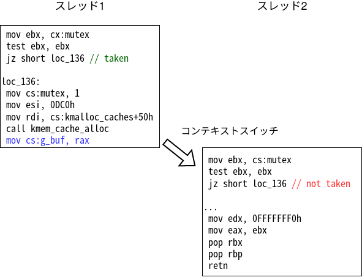
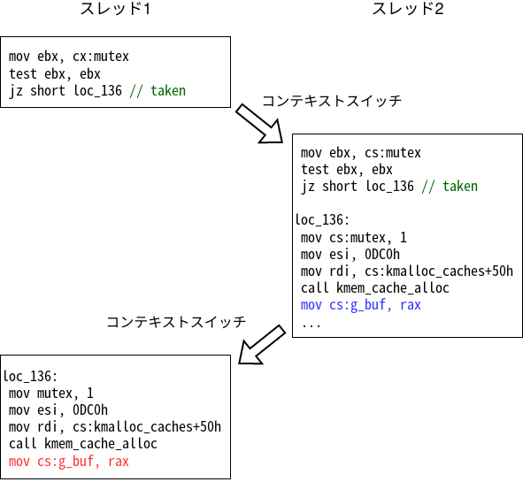
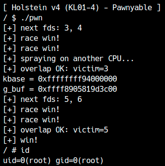

In the previous chapter, we exploited the Holstein module’s use-after-free vulnerability to escalate privileges. The developers fixed the module with a third patch and released Holstein v4. According to the developers, there are no further vulnerabilities and development has stopped. In this chapter, we will exploit the final version, Holstein v4.
Patch analysis
You can download the final version, v4, here. First, let’s examine the differences from v3.
The startup script run.sh has been modified to work with multiple cores.
1 | - -smp 1 \ |
The program’s memory leak and use-after-free issues have been fixed.
When open is called, if another process has already opened the driver, the mutex variable is set to 1 and open fails.
1 | int mutex = 0; |
In other words, the driver cannot be opened again while it is already open. When the open file descriptor is passed to close, mutex returns to 0 and open becomes possible again.
1 | static int module_close(struct inode *inode, struct file *file) |
Where are the vulnerabilities? Think about it for a moment.
Race Condition
Although this implementation may seem perfect, it does not fully account for multiple processes accessing the same resource.
The operating system uses context switches to run multiple processes and threads. A context switch can occur at the granularity of an assembly instruction rather than an entire function[1]. Therefore, execution can switch during module_open. In this chapter, we will exploit the resulting race condition in a multithreaded program.
Occurrence conditions
First, consider the consequences of race conditions. For example, consider a case where the context is switched in the following execution order.

Initially, mutex is 0, so thread 1 takes the branch that allocates g_buf. The blue instruction then stores the address in g_buf.
A context switch transfers execution to thread 2. At this point, mutex is 1, so thread 2 does not take the branch and reaches the path that returns EBUSY; its open fails.
Thus, module_open behaves as intended in this example. Now consider the execution order in the next figure.

As before, thread 1 reaches the path that allocates g_buf. This time, however, a context switch occurs before it sets mutex to 1.
When thread 2 reaches the conditional branch, mutex is still 0, so it also reaches the allocation path. The blue instruction stores its allocated address in g_buf.
Execution then switches back to thread 1. Thread 1 allocates a buffer and uses the red instruction to store its address in g_buf as well.
Both open calls succeed, and the buffer allocated by thread 1 becomes accessible to both threads.
In this way, when designing kernel space code, bugs will occur if you do not always take multithreading into account.

The conflict was caused by not using atomic operations to read and write the variable mutex.
If open succeeds twice, closing either descriptor leaves g_buf pointing to freed memory, causing the same use-after-free as in the previous chapter.
make the competition successful
Let’s write a program to determine whether the open race is really possible.
Calling open repeatedly from multiple threads can easily produce a race, but the loop must continue until success is detected. There are several ways to detect it; because two threads are used, success can reasonably be identified when both read operations succeed. To avoid unnecessary read calls, this example checks the file descriptors instead: if open succeeds in both threads, one of the descriptors should be 4.
The following program runs the same function in two threads to create the race. You can instead loop in the main thread or design another detection method. Do not forget to link with libpthread using the -lpthread compiler option.
1 | void* race(void *arg) { |
This shows that the race will be successful with almost 100% probability. The time it takes to complete a race is measured in milliseconds, making it fully usable as a primitive.
A data race is a situation in which two threads simultaneously (asynchronously) access (at least one writes) data at a certain location in memory. Therefore, data races cause undefined behavior. Data conflicts can be resolved with appropriate exclusive control and atomic operations.
On the other hand, a race condition refers to a situation where different results are produced depending on the order of execution of multiple threads. A race condition is the same as a logic bug; it simply works that way because the programmer wrote it that way, and although it causes unexpected behavior, it has nothing to do with unsound behavior. When multithreading produces results that are contrary to the programmer's intentions, we can say that there is a race condition bug.
This driver has a race condition due to an implementation error that causes a data race on the buffer pointer.
CPU and Heap Spray
There are many cases where conflict exploitation is implemented in multi-threads like this time, but there are some things you need to be careful about when doing so.
The race condition in multiple threads means multiple CPU cores are being used during the attack. Then, of course, from either CPU core module_open was called kzalloc The memory area will be secured.
Here, previously explained in the Heap Overflow chapterSLUB allocatorLet's recall the characteristics of The SLUB allocator manages slabs used for allocating objects in memory areas for each CPU.
That is, now main The function is allocated from a different CPU core than the thread on which it is running.g_buf but kfree When this happens, it will naturally be linked to the slab that corresponds to the CPU core at the time of allocation. Then, after that main Even if you do Heap Spray from the thread,kfree was done g_buf It will not overlap.
Therefore, in a situation like thisRun Heap Spray with multiple threadsPlease be careful.
Also,/dev/ptmx A new file descriptor is created by opening it, but there is a limit to the number of file descriptors that one process can create, so if a large amount of spray is required, it is necessary to devise measures such as closing unrelated file descriptors as soon as the spray hits.
1 | void* spray_thread(void *args) { |

By using the sched_setaffinity function, you can limit the CPU used by threads, so even if the number of cores increases, the behavior will be the same as when there are 2 cores.
Privilege escalation
Now, follow the same steps as before to escalate privileges.
A data race causes a use-after-free, and spraying tty_struct objects lets us repeatedly turn the race into a usable UAF write.
The sample exploit can be downloaded here.

Race condition exploits are difficult to debug, so the key to exploit development is whether the theory can be realized in the first stage and whether a primitive can be created that stably causes a race with a high probability.
Depending on the CPU, there is a more granular issue such as changing the order of execution of instructions for optimization purposes, but this is not relevant to this article, so I will not explain it.↩︎